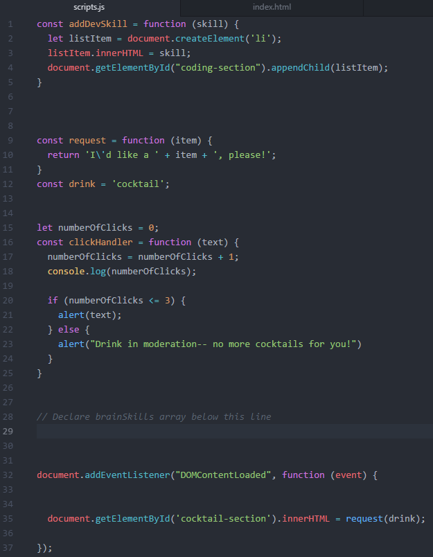
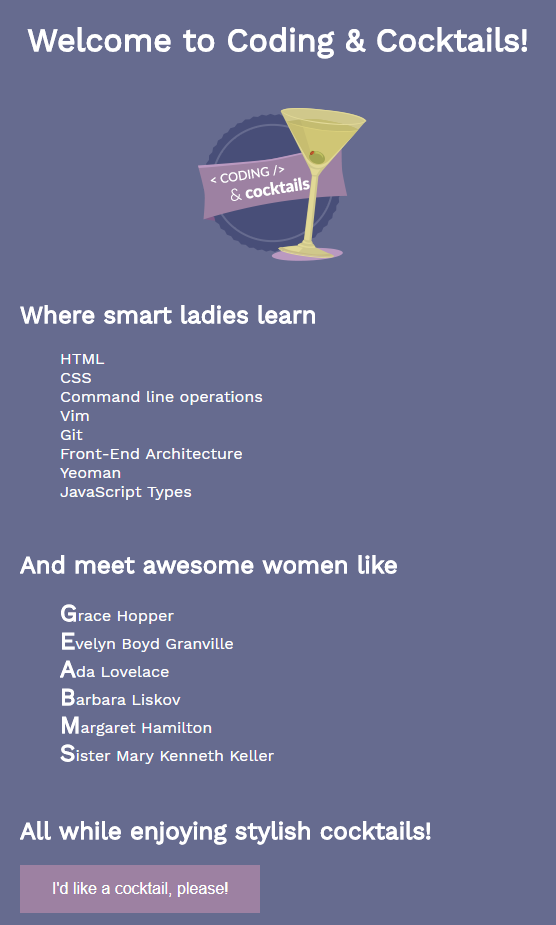
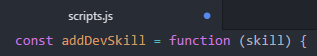
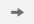

Expand this section to compare your work.
You can also compare your scripts.js file with our answer key if the image is too difficult to read.
Now we will create a web page with interactive elements. In the rest of the worksheet we will build button click handling and manipulate the elements on the web page. When complete, you will have a web page that looks like this

In this section, we will write our own functions in JavaScript by using conditional logic and learn how to debug our code.
This section will help guide you through the following steps:
Let's get the files we need and set up our workspace.
Using Chrome, download the zip file from the GitHub repo and extract the contents to "CodingAndCocktails/JavaScriptBasics" folder.
If you don't have a "CodingAndCocktails/JavaScriptBasics" folder, take a moment to set up your workspace.
Not sure how to extract the contents of the zip file?
Mac users: Double click on the downloaded file with the .zip extension
Windows users: Right click on the file with the .zip extension and choose "Extract All." Select the destination you would like to extract the files to.
Open the "JavaScriptBasics" folder in Atom.
To open the folder in Atom, follow the instructions below:
Navigate to and select "JavaScriptBasics" folder
You can close all tabs except for index.html and scripts.js.
We will use the atom-live-server package we installed to serve the index.html. This package opens up the web page in your default browser and reload the page whenever you save files. Start the live server by selecting Packages atom-live-server. Select Start server. A browser tab will open.
If you don't have the atom-live-server package, take a moment to set up your workspace.
If the tab opens in another browser, copy the URL and paste it into a new tab in Chrome. The reload will automatically happen in Chrome.
If you get an access warning, click "Allow" to let atom-live-server serve the application.
Let's get coding! We'll call a function and keep track of click events.
In your Atom, open scripts.js. You'll see MadLibs items like we had in the first section of the worksheet.
Search for <noun> and <verb> and replace the variables. Save the file and look at the web page in Chrome. The lavender button now has the text "I'd like a cocktail please!", but we want it do something when we click on it.
Every time you make a change, save the file.
The atom-live-server package will automatically refresh the Chrome tab to keep the app up to date with your saved work. Atom alerts you to unsaved work by displaying a blue circle in the tab:

Save the file by navigating to File Save or by using the keyboard shortcut cmd + s for Macs and ctrl + s for Windows. Refer to Helpful Keyboard Shortcuts.
View the worksheet and the IDE in split screen mode to make it easier to work through tonight's session. Check out the helpful tips in the Setup guide.
It's easier to understand what's going on if we have visual indications of our work. Browsers have a built-in function to display alert messages. Let's display an alert message with the word "click" inside of it. Find the clickHandler function in myscript.js in Atom and add alert('click'); inside the function (between the curly braces). The clickHandler function should look like this:
const clickHandler = function(text) {
alert('click');
};
Notice alert('click'); is indented inside the function. Indenting code inside functions make it easier for you to see where a function begins (the open curly brace) and where it ends (the close curly brace). Indention makes code human readable.
We passed in the string "click" to the built in function alert. You can use either double quotes "" or single quotes '' for strings.
Now try clicking the button in Chrome. An alert message appears! Close the alert message by clicking Ok.
In Atom, define a new variable called numberOfClicks above the line with the code const clickHandler = function(text) so we can keep track of the number of button clicks and set the value to 0. Your variable should look like this:
var numberOfClicks = 0;
You declared numberOfClicks variable outside of the function so that it's accessible by more than clickHandler function. The scope of the variable and function determines accessibility of that variable or function in the application. We will learn more about scope next session.
Track the clicks by incrementing numberOfClicks by 1 for each button click. We can do this inside the clickHandler function. Place your cursor after the opening curly brace and press Enter to create a new line above alert('click');. Type the following statement:
numberOfClicks = numberOfClicks + 1;
We are adding 1 to numberOfClicks variable and setting the result back to numberOfClicks.
There are other ways to assign an increment to the numberOfClicks variable. You could have also written:
numberOfClicks += 1;
numberOfClicks++;
Update the alert message to show the number of clicks by adding numberOfClicks to the display text using string concatenation.
alert('click ' + numberOfClicks);
In Chrome, click the button a few times to see your click counter in action. Don't forget to close the alert message between each click.
As applications grow, we need ways to troubleshoot code. We'll learn the basics of debugging a web app.
There's a better message to display in the alert, to provide more context. In Atom, change the parameter you pass in to the alert method to use the variable named text. You are using the same parameter passed into the clickHandler function. Your code should look like this:
alert(text);
Notice there are no quotation marks. This now references the variable named text, not the string "text". Try adding quotation marks and interact with the button in Chrome to see the difference.
We still want to see the button click counter for troubleshooting purposes. We can log the number of clicks to the console. Add console.log(numberOfClicks); right after incrementing the clicks in the clickHandler function.
To see console logging in action, open the Chrome DevTools and click on the button. You should see the number of clicks write to the console. Leave DevTools open.
Open Chrome DevTools by using cmd + option + i on Macs, F12 on Windows. Refer to Helpful Keyboard Shortcuts.
We declared numberOfClicks using var. What happens if we used const? In Atom, change the declaration for numberOfClicks to use const.
var numberOfClicks = 0; to const numberOfClicks = 0;.
Try clicking on the button in Chrome. Oh no! Now we see an error in the console. Notice how DevTools helps you debug your script. It tells you which line of code the failure occurs scripts.js:7. The line number may be different for you.
It also provides information on caller of the failing line-- HTMLButtonElement.onClick (index:25). As you create complex applications, there may be layers of functions called. The layers of functions called is a call stack. The output containing the error, along with all the functions called leading up to it, is a stack trace.
The keyword const makes a variable read-only, so we can't increment the value. The error message helps us identify the problem by providing both the line of code and why. In Atom, change the declaration of numberOfClicks to use let. Leave DevTools open.
Click the button in Chrome and notice we fixed the error.
Business needs can be complex. We'll add conditional logic to execute different code paths.
Inside the clickHandler function, add an if statement to only show the alert for greater than 2 button clicks by adding a conditional statement:
if (numberOfClicks > 2) {
alert(text);
}
Notice the indention on the alert(text);. Indent everything inside the if statement to make it easier to read your code. Doing so helps your brain group logical units of code together at a glance!
Use the console.log output to confirm we show the alert starting from the 3rd button click.
You will use Atom to type code statements and Chrome to verify your work when your web page reloads. Don't forget to save scripts.js every time you type a code statement.
If we want to only show the alert the first 3 times you clicked the button, how would you change the conditional statement?
if (numberOfClicks > 2) to either
if (numberOfClicks <= 3)
if (numberOfClicks < 4)
What if we want to show a different alert message after 3 button clicks? Add an else clause to the conditional statement:
if (numberOfClicks <= 3) {
alert(text);
} else {
alert("Drink in moderation-- no more cocktails for you!");
}
This is starting to become difficult to track using console.log. Let's try debugging the onClickHandler function in DevTools. Add debugger; as the first line of the clickHandler function. Your function should look like this:
const clickHandler = function(text) {
debugger;
numberOfClicks = numberOfClicks + 1;
// rest of the function remains here
};
In Chrome, click on the button. Your web page paused execution and DevTools now shows scripts.js. We can now step through the code line by line and inspect the function along the way.
debugger; works only when debugging capabilities, such as Chrome DevTools, is open.
In the scripts.js tab in Chrome, hover over numberOfClicks. It shows you the current value of the variable, 0. Click Step button,  (located at the upper right of DevTools window), to execute the next line of code in scripts.js. The line where we increment numberOfClicks highlights. The current value of numberOfClicks is still 0.
The steps through the source code. You can also Step into and step out of lines of code. Tonight we will use step.
Click Step again. Now we see numberOfClicks increment to 1.
Click Step until the if statement highlights.
Click Step to execute the if statement. Since 1 is less than or equal to 3, we expect to execute alert(text); statement. Does it?
Click Resume,  , to resume execution on the rest of the code.
, to resume execution on the rest of the code.
We are using Step in this session, but debugging tools, such as Chrome DevTools, have other capabilities to make debugging easy. You can add breakpoints to force your web page to pause execution without adding debugger; statements so you can execute multiple lines of code pausing execution using the Resume button instead of Step. You can also add the numberOfClicks variable to a watch list so that you can see the value at a glance.
Ask a mentor to help you set a breakpoint on the if statement and check out the homework to practice debugging using DevTools.
Repeat the stepping through the code and resuming until you click for the 4th time. Does the else condition execute?
In Atom, remove the debugger; statement so we aren't interrupted in the rest of the worksheet. Feel free to add it back if you get stuck!
debugger; is helpful for writing code, but don't use it for production code. Most linters will red flag debugger during the build process to help safe-guard your application.

Compare your scripts.js against the answer key for your work so far. It might look a little different depending on spacing.
You can also compare your scripts.js file with our answer key if the image is too difficult to read.
MDN Reference: Variable assignment